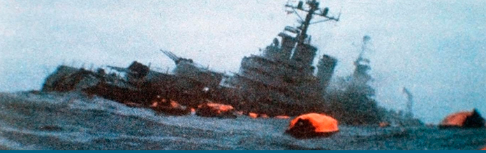
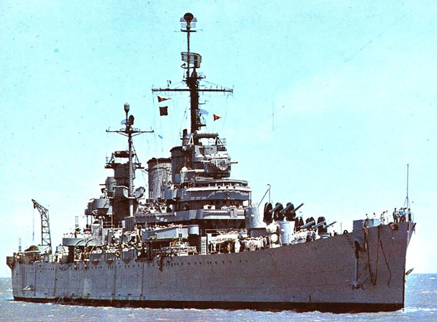

Por Felipe Pigna

El 2 de mayo de 1982, un mes después de que la Argentina tomara posesión de las Islas Malvinas – territorio usurpado por los ingleses en 1833- el crucero General Belgrano recibió un ataque con torpedos de un submarino británico, mientras navegaba fuera de la zona de exclusión que Gran Bretaña había fijado. No tardaría en hundirse ocasionando la muerte de 368 tripulantes. A continuación transcribimos un artículo del diario La Naciónpublicado el 4 de mayo de 1982 sobre el episodio. El 2 de mayo de 1982, un mes después de que la Argentina tomara posesión de las Islas Malvinas – territorio usurpado por los ingleses en 1833- el crucero General Belgrano recibió un ataque con torpedos de un submarino británico, mientras navegaba fuera de la zona de exclusión que Gran Bretaña había fijado. No tardaría en hundirse ocasionando la muerte de 368 tripulantes. A continuación transcribimos un artículo del diario La Naciónpublicado el 4 de mayo de 1982 sobre el episodio.
Fuente: Diario La Nación 4 de mayo de 1982.
Hasta anoche se habían rescatado 123 náufragos y seguían las tareas de socorro. La nave tenía capacidad para una dotación de 1042 hombres. También se perdió el enlace radioeléctrico con el aviso Sobral, alcanzado por el fuego enemigo. Costa Méndez afirmó que “está resquebrajado el sistema interamericano”. Gestión en Perú.
La confirmación del hundimiento del crucero de nuestra Armada, General Belgrano, que llevaba a bordo una dotación de 1042 hombres, constituyó ayer un trágico testimonio de la gravedad adquirida por la guerra –no declarada- entre la Argentina y Gran Bretaña en aguas del Atlántico Sur.
Anoche se habían rescatado 123 náufragos y continuaban las tareas de socorro. La nave se hundió al ser torpedeada por un submarino británico al Este de la isla de los Estados, fuera de la zona de bloqueo.
El Estado Mayor Conjunto dio cuenta, cerca de medianoche, de que también se había perdido enlace radioeléctrico con el Aviso Sobral, nave de la Armada alcanzada por el fuego enemigo en proximidades de Puerto Argentino, cuando concurría en ayuda de un piloto de la Fuerza Aérea que anteayer se había eyectado de su aparato.
